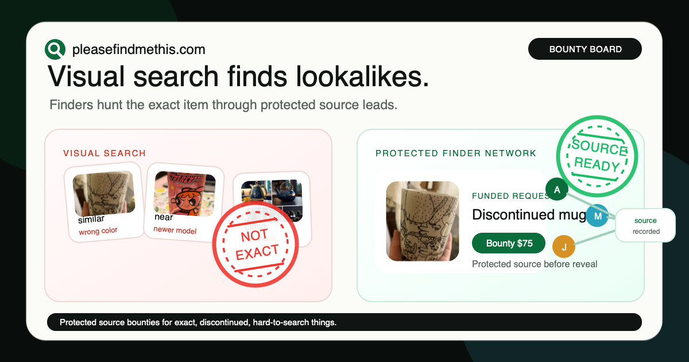
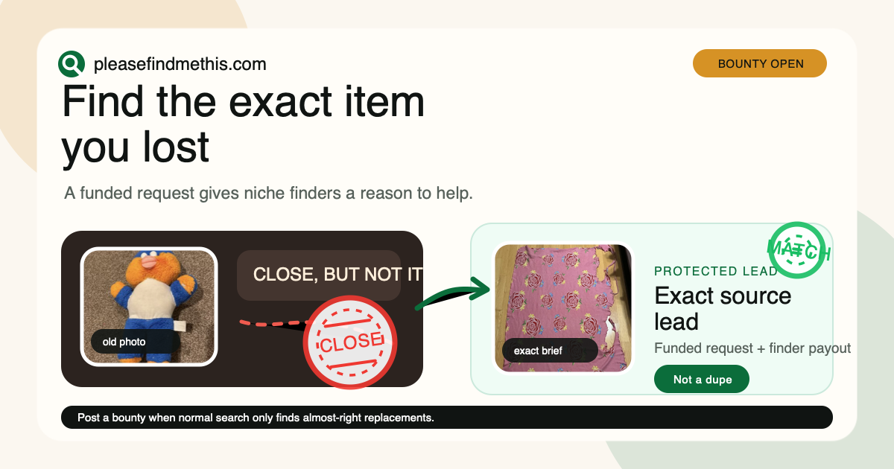
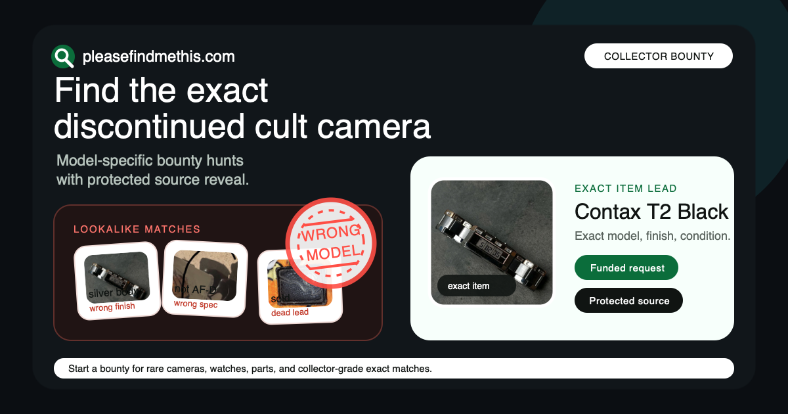
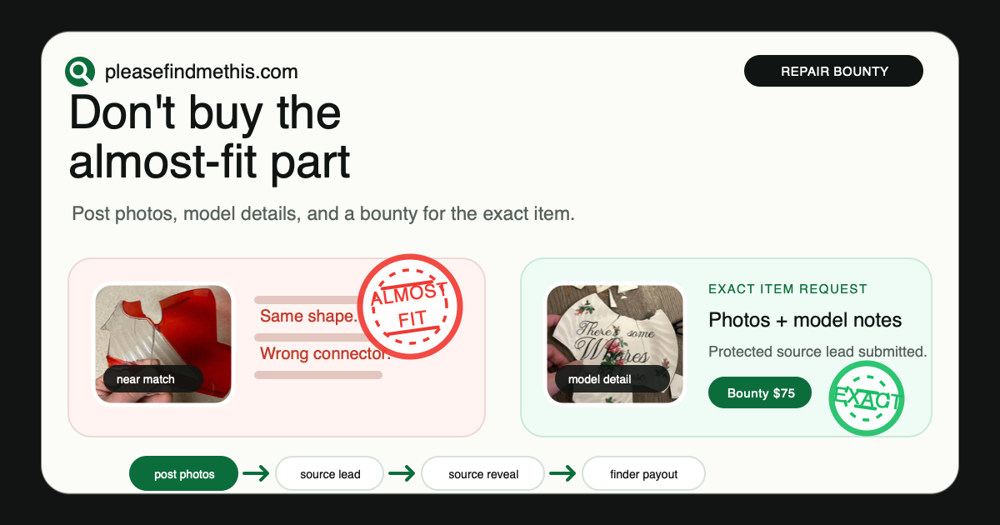
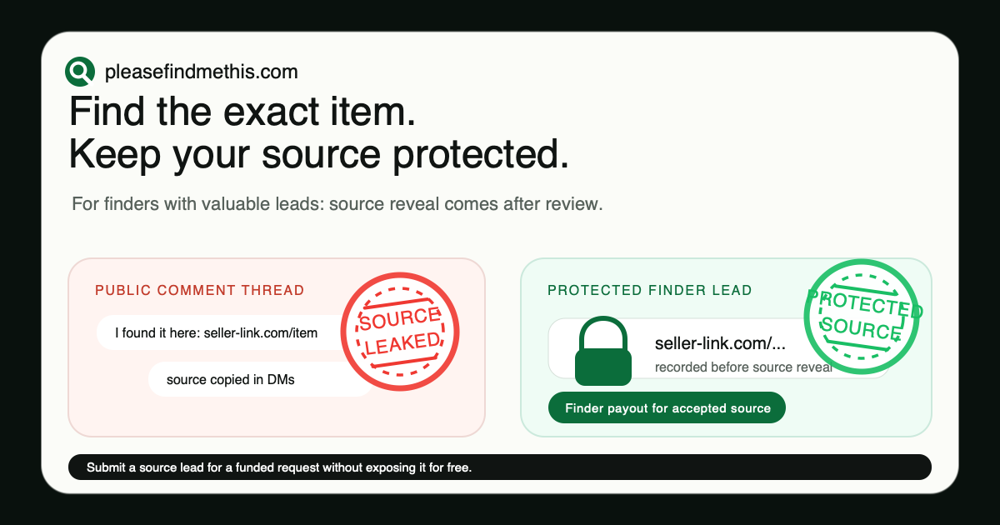
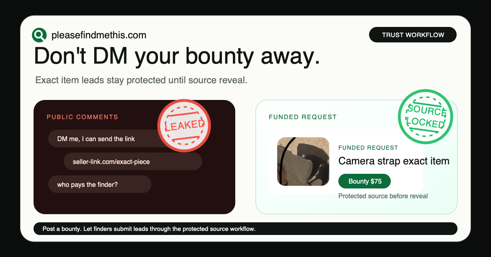
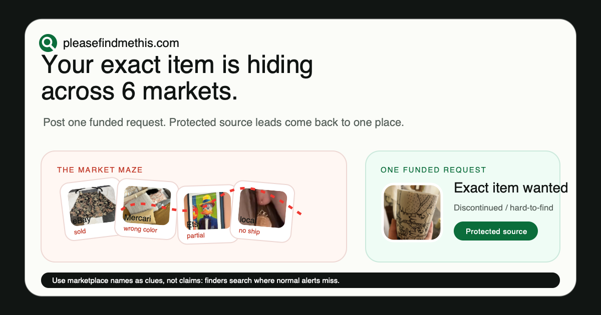
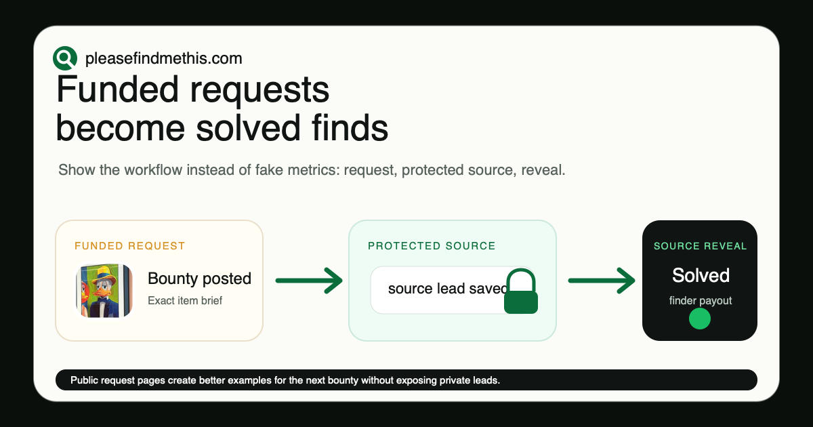
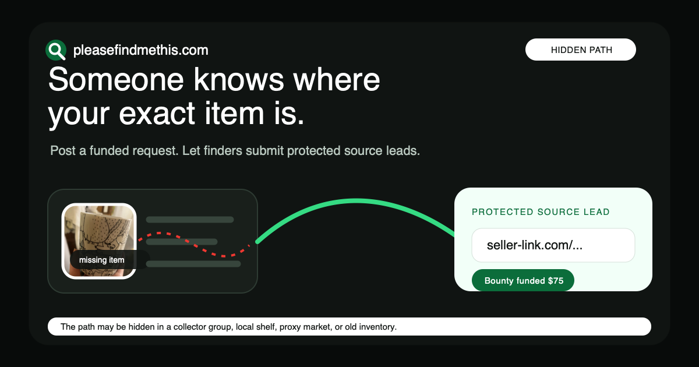
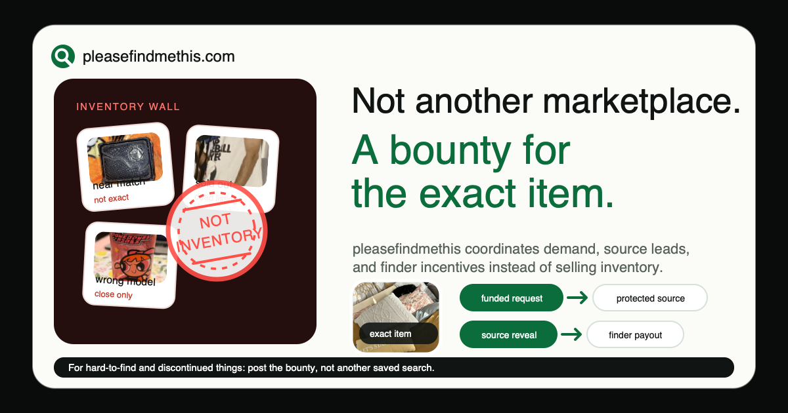

Lookalike Loop vs Finder Network
Contrast bias and loss aversion: near-matches feel costly, a protected human finder path feels cleaner.
Ten 1200x630 social-share card directions generated from the ad-creative brief.

Contrast bias and loss aversion: near-matches feel costly, a protected human finder path feels cleaner.

Emotional closure: the viewer feels the difference between close and exact.

Authenticity anxiety: collectors fear the wrong model, wrong finish, or wrong spec.

Loss aversion: wrong repair parts mean wasted money, returns, and delays.

Finder loss aversion: do not give away a valuable source lead for free.

Trust contrast: public DMs feel messy, a source recorded before reveal feels structured.

Fragmentation relief: one request replaces checking scattered marketplaces alone.

Visible workflow proof without fake metrics: request, protected source, source reveal.

Curiosity gap: the item is not impossible, the path is just hidden.

Pattern interrupt and category correction: this is not another store.